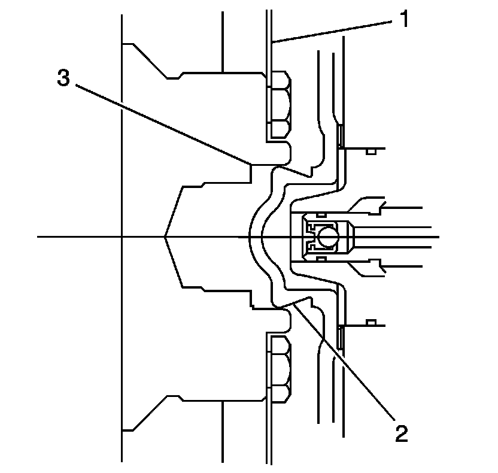

Flexplate/Torque Converter Vibration Test
Flexplate/Torque Converter Vibration Test
Isolating Vibration
Notice: Some engine/transaxle combinations cannot be balanced in this manner due to restricted access or limited clearances between the torque converter bolts and the engine. Ensure that the bolts do not bottom out in the lug nuts or the torque converter cover which could dent and cause internal damage.
To isolate and correct a flywheel or torque converter vibration, separate the torque converter from the flywheel to determine if vibration is in the engine or transmission.
1. With the engine at idle speed and the transmission in PARK or NEUTRAL, observe the vibration.
2. Turn the engine OFF.
3. Raise and suitably support the vehicle. Refer to Lifting and Jacking the Vehicle.
4. Remove the transmission converter cover bolts and the cover.
5. Mark the relationship of the converter to the flywheel.
6. Remove the bolts attaching the converter to the flywheel.
7. Slide the torque converter away from the flywheel.
8. Rotate the flex plate and torque converter to inspect for defects or missing balance weights. Refer to Automatic Transmission Flex Plate Cleaning and Inspection. 36. Automatic Transmission Flex Plate Cleaning and Inspection
9. Lower the vehicle.
10. With the engine at idle speed and the transmission in PARK or NEUTRAL, observe the vibration. Refer to Diagnostic Starting Point - Vibration Diagnosis and Correction. Diagnostic Starting Point - Vibration Diagnosis and Correction
11. Turn the engine OFF.
Indexing Torque Converter
To determine and correct a torque converter vibration, the following procedure may have to be performed several times to achieve the best possible torque converter to flywheel balance.
1. Raise and suitably support the vehicle. Refer to Lifting and Jacking the Vehicle.
2. Rotate the torque converter one bolt position.

3. Align the torque converter hub (2) in the engine crankshaft (3) and install the torque converter to flywheel bolts.
4. Lower the vehicle.
5. With the engine at idle speed and the transmission in PARK or NEUTRAL, observe the vibration. Refer to Noise and Vibration Analysis. Noise and Vibration Analysis
Repeat this procedure until you obtain the best possible balance.
6. Install the transmission converter cover bolts and the cover.